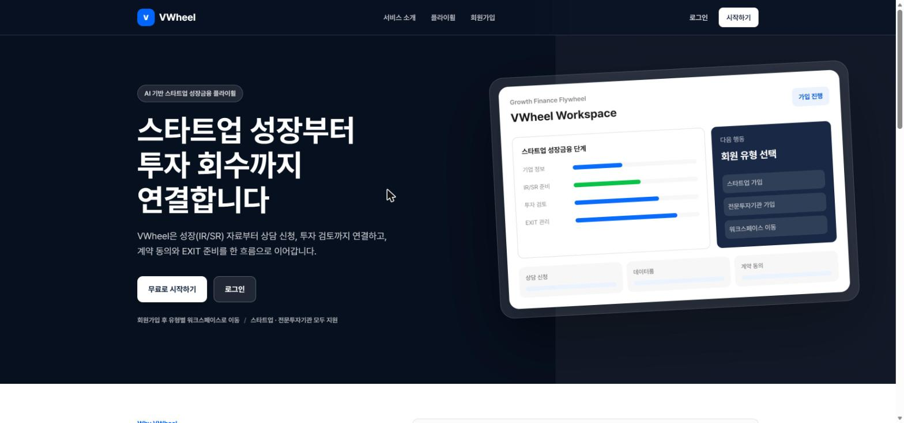

V-Wheel
AI Driven Value Flywheel
기업 데이터를 연결하고 분석하여 투자기회를 발굴하고 가치를 극대화하는 AI 기반 의사결정 플랫폼
WHY V-WHEEL
AI가 데이터를 읽고,
사람이 더 나은 결정을 합니다.
V-Wheel은 투자심사 과정의 반복 업무를 줄이고 기업의 핵심 정보를 구조화해, 투자자와 기업 모두가 더 빠르고 일관된 판단을 내릴 수 있도록 지원합니다.
데이터 통합다양한 데이터를 연결해 하나의 인사이트로
AI 분석정량·정성 분석을 통한 의사결정 지원
딜 소싱AI 기반 기업 탐색과 투자기회 발굴
성과 관리실시간 모니터링과 투자 성과 극대화



01Discover기업 발굴
→02Analyze기업 분석
→03ValueValue-Band
→04ReviewAI Review
→05Monitor사후관리
플랫폼 준비중 →
V-Wheel 서비스는 현재 개발·고도화 중입니다.